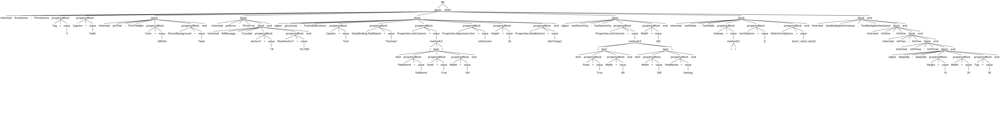

DFM Parsing with ANTLR4
In this section we will leverage our refined DFM grammar to parse an example DFM file. We will describe the techniques needed to parse a DFM file with ANTLR4, and examine the outputs.
Setup
For parsing a DFM file with our grammar, we will first need to set up ANTLR.
Prerequisites
- Java JDK (latest but earlier versions should work)
- ANTLRv4 complete jar
ANTLR can be manually downloaded from the source above, or using the command line tool curl to grab it:
$ cd /usr/local/lib
# check latest version (at the time of writing this documentation 4.13.2 is the latest)
$ curl -O http://www.antlr.org/download/antlr-4.13.2-complete.jar
Instructions:
- Copy the downloaded tool where usually third-party java libraries live (up to preference); Example:
/usr/local/liborC:\Program Files\Java\libs - Add tool to
CLASSPATHand to startup script (Example:.bash_profile) - Optional: also add aliases to startup script to simplify the usage of ANTLR
Linux/MacOS:
# 1.
sudo cp antlr-4.x-complete.jar /usr/local/lib/
# 2. and 3.
# add this to .bash_profile
export CLASSPATH=".:/usr/local/lib/antlr-4.x-complete.jar:$CLASSPATH"
# simplify the use of the tool to generate lexer and parser
alias antlr4='java -jar /usr/local/lib/antlr-4.x-complete.jar'
# simplify the use of the tool to test the generated code
alias grun='java org.antlr.v4.gui.TestRig'
# set up alias for java compiler
alias javac='javac -cp ".:/usr/local/lib/antlr-4.x-complete.jar"'
Windows:
# 1. Copy antlr-4.x-complete.jar in C:\Program Files\Java\libs (or wherever preferred)
# 2. Append the location of ANTLR to the CLASSPATH variable, or create a CLASSPATH variable if haven't already done so
# by pressing WIN + R and typing sysdm.cpl, then selecting Advanced (tab) > Environment variables > System Variables
# CLASSPATH -> .;C:\Program Files\Java\libs\antlr-4.x-complete.jar;%CLASSPATH%
# 3. Add aliases
# create antlr4.bat
java org.antlr.v4.Tool %*
# create grun.bat
java org.antlr.v4.gui.TestRig %*
# put them in the system PATH or any of the directories included in PATH
Replace 4.x with the downloaded version.
Notice: we will be assuming that the reader is using the same aliases as the ones specified above.
Let's Parse!
Now that the setup is complete, the time has come to parse some DFM code.
First things first, let's copy our DFM grammar into a fresh directory, included in a file with the .g4 extension.
Notice: remember that the file name has to correspond to the grammar specification in the .g4 file.
../dir/DelphiDFM.g4 <=> grammar DelphiDFM ;
Next, we generate the lexer and parser using ANTLR:
antlr4 DelphiDFM.g4
Output:
ls
DelphiDFMBaseListener.java
DelphiDFMLexer.interp
DelphiDFMListener.java
DelphiDFM.g4
DelphiDFMLexer.java
DelphiDFMParser.java
DelphiDFM.interp
DelphiDFMLexer.tokens
DelphiDFM.tokens
Great! The next step is to compile all .java files generated, like so:
javac *.java
Now we get the compiled files:
ls
DelphiDFMBaseListener.class
DelphiDFMBaseListener.java
DelphiDFM.g4
DelphiDFM.interp
DelphiDFMLexer.class
DelphiDFMLexer.interp
DelphiDFMLexer.java
DelphiDFMLexer.tokens
DelphiDFMListener.class
DelphiDFMListener.java
'DelphiDFMParser$BlockContext.class'
'DelphiDFMParser$FileContext.class'
'DelphiDFMParser$ItemContext.class'
'DelphiDFMParser$MethodLSContext.class'
'DelphiDFMParser$PropertyBlockContext.class'
'DelphiDFMParser$ValueContext.class'
DelphiDFMParser.class
DelphiDFMParser.java
DelphiDFM.tokens
Aha! Now we can see our parser rules as well.

Test Against a DFM File
The only thing we are missing is a test file that we should parse. The DFM file below was conceived to test all rules we previously defined in our grammar:
../dir/test.dfm
inherited frmActions: TfrmActions
Tag = 3
Caption = 'hello'
inherited pnlTitle: TfrmTitleBar
Color = clWhite
ParentBackground = False
end
inherited pnlError: TfrmError
inherited lblMessage: TcxLabel
AnchorY = -18
FloatAnchorY = 18.7283
end
end
object gvListUser: TcxGridDBColumn
Caption = 'Test'
DataBinding.FieldName = 'TestUser'
Properties.ListColumns = <
item
FieldName = 'fullName'
Fixed = True
Width = 100
end>
Properties.Alignment.Vert = taVCencter
Height = 20
Properties.DateButtons = [btnToday]
end
object testItemHchy: TestItemHchy
Properties.ListColumns = <
item
Fixed = True
Width = 80
end
item
Width = 200
FieldName = 'testing'
end>
Width = 282
end
inherited testFields: TestFields
Indexes = <>
SortOptions = []
OtherSortOptions = [test1, test2, test3]
end
inherited testMultipleInheritance: TestMultipleInheritance
inherited inhOne: InhOne
inherited inhTwo: InhTwo
inherited inhThree: InhThree
object deepObj: DeepObj
Height = 10
Width = 20
Top = 30
end
end
end
end
end
end
Token Testing
Now we have all necessary components. First, let's take a look at all identified tokens from our test.dfm file. We use grun, which is the alias for ANTLR's testing rig: org.antlr.v4.gui.TestRig.
We use the command:
grun DelphiDFM file -tokens test.dfm
And our output:
[@0,0:8='inherited',<'inherited'>,1:0]
[@1,10:19='frmActions',<ID>,1:10]
[@2,20:20=':',<':'>,1:20]
[@3,22:32='TfrmActions',<ID>,1:22]
[@4,38:40='Tag',<ID>,2:4]
[@5,42:42='=',<'='>,2:8]
[@6,44:44='3',<INT>,2:10]
[@7,50:56='Caption',<ID>,3:4]
[@8,58:58='=',<'='>,3:12]
[@9,60:66=''hello'',<STRING>,3:14]
[@10,72:80='inherited',<'inherited'>,4:4]
[@11,82:89='pnlTitle',<ID>,4:14]
[@12,90:90=':',<':'>,4:22]
[@13,92:103='TfrmTitleBar',<ID>,4:24]
[@14,113:117='Color',<ID>,5:8]
[@15,119:119='=',<'='>,5:14]
[@16,121:127='clWhite',<ID>,5:16]
[@17,137:152='ParentBackground',<ID>,6:8]
[@18,154:154='=',<'='>,6:25]
[@19,156:160='False',<ID>,6:27]
[@20,166:168='end',<'end'>,7:4]
[@21,174:182='inherited',<'inherited'>,8:4]
[@22,184:191='pnlError',<ID>,8:14]
[@23,192:192=':',<':'>,8:22]
[@24,194:202='TfrmError',<ID>,8:24]
[@25,212:220='inherited',<'inherited'>,9:8]
[@26,222:231='lblMessage',<ID>,9:18]
[@27,232:232=':',<':'>,9:28]
[@28,234:241='TcxLabel',<ID>,9:30]
[@29,255:261='AnchorY',<ID>,10:12]
[@30,263:263='=',<'='>,10:20]
[@31,265:267='-18',<INT>,10:22]
[@32,281:292='FloatAnchorY',<ID>,11:12]
...
Continued further until all tokens are consumed.
Note that in our given command, file specifies the rule that needs to contain our input.
Token Decomposition
Now we can see an output of all identified tokens from our test file. Let's decompose a token so we understand how they are built. For instance, our second token:
[@1,10:19='frmActions',<ID>,1:10]
Each line of the output represents a single token and shows everything we know about the token:
@1indicates that it is the second token (indexed from 0).10:19=indicates that it goes from character position 10 to 19 (inclusive starting from 0).'frmActions'indicates what text it has.<ID>indicates the type of token.- finally,
1:10indicates that it is on line 1 (from 1), and is at character position 10 (starting from zero and counting tabs as a single character).
Trees
So what if we want to see our parse tree? Let's see the command for that:
grun DelphiDFM file -tree test.dfm
And our output:
(file
(block inherited frmActions : TfrmActions
(propertyBlock Tag = (value 3))
(propertyBlock Caption = (value 'hello'))
(block inherited pnlTitle : TfrmTitleBar
(propertyBlock Color = (value clWhite))
(propertyBlock ParentBackground = (value False))
end)
(block inherited pnlError : TfrmError
(block inherited lblMessage : TcxLabel
(propertyBlock AnchorY = (value -18))
(propertyBlock FloatAnchorY = (value 18.7283))
end)
end)
(block object gvListUser : TcxGridDBColumn
(propertyBlock Caption = (value 'Test'))
(propertyBlock DataBinding.FieldName = (value 'TestUser'))
(propertyBlock Properties.ListColumns = (value
(methodLS < (item item
(propertyBlock FieldName = (value 'fullName'))
(propertyBlock Fixed = (value True))
(propertyBlock Width = (value 100))
end) >)))
(propertyBlock Properties.Alignment.Vert = (value taVCencter))
(propertyBlock Height = (value 20))
(propertyBlock Properties.DateButtons = (value [btnToday]))
end)
(block object testItemHchy : TestItemHchy
(propertyBlock Properties.ListColumns = (value
(methodLS < (item item
(propertyBlock Fixed = (value True))
(propertyBlock Width = (value 80))
end)
(item item
(propertyBlock Width = (value 200))
(propertyBlock FieldName = (value 'testing'))
end) >)))
(propertyBlock Width = (value 282))
end)
(block inherited testFields : TestFields
(propertyBlock Indexes = (value (methodLS < >)))
(propertyBlock SortOptions = (value []))
(propertyBlock OtherSortOptions = (value [test1, test2, test3]))
end)
(block inherited testMultipleInheritance : TestMultipleInheritance
(block inherited inhOne : InhOne
(block inherited inhTwo : InhTwo
(block inherited inhThree : InhThree
(block object deepObj : DeepObj
(propertyBlock Height = (value 10))
(propertyBlock Width = (value 20))
(propertyBlock Top = (value 30))
end)
end)
end)
end)
end)
end)
<EOF>)
NOTE: The output above was manually modified with newlines for readability purposes, to ultimately demonstrate the presence of hierarchy.
The real output is actually a continuous line, and looks like this:
(file (block inherited frmActions : TfrmActions (propertyBlock Tag = (value 3)) (propertyBlock Caption = (value 'hello')) (block inherited pnlTitle : TfrmTitleBar (propertyBlock Color = (value clWhite)) (propertyBlock ParentBackground = (value False)) end) (block inherited pnlError : TfrmError (block inherited lblMessage : TcxLabel (propertyBlock AnchorY = (value -18)) (propertyBlock FloatAnchorY = (value 18.7283)) end) end) (block object gvListUser : TcxGridDBColumn (propertyBlock Caption = (value 'Test')) (propertyBlock DataBinding.FieldName = (value 'TestUser')) (propertyBlock Properties.ListColumns = (value (methodLS < (item item (propertyBlock FieldName = (value 'fullName')) (propertyBlock Fixed = (value True)) (propertyBlock Width = (value 100)) end) >))) (propertyBlock Properties.Alignment.Vert = (value taVCencter)) (propertyBlock Height = (value 20)) (propertyBlock Properties.DateButtons = (value [btnToday])) end) (block object testItemHchy : TestItemHchy (propertyBlock Properties.ListColumns = (value (methodLS < (item item (propertyBlock Fixed = (value True)) (propertyBlock Width = (value 80)) end) (item item (propertyBlock Width = (value 200)) (propertyBlock FieldName = (value 'testing')) end) >))) (propertyBlock Width = (value 282)) end) (block inherited testFields : TestFields (propertyBlock Indexes = (value (methodLS < >))) (propertyBlock SortOptions = (value [])) (propertyBlock OtherSortOptions = (value [test1, test2, test3])) end) (block inherited testMultipleInheritance : TestMultipleInheritance (block inherited inhOne : InhOne (block inherited inhTwo : InhTwo (block inherited inhThree : InhThree (block object deepObj : DeepObj (propertyBlock Height = (value 10)) (propertyBlock Width = (value 20)) (propertyBlock Top = (value 30)) end) end) end) end) end) end) <EOF>)
Its contents are the same as the edited example preceding it, and still identifies hierarchy correctly; notice the end closures at the end of the output.
Tree Visualization
Thankfully, to simplify our lives, ANTLR provides a graphical representation of trees. The test is very simple:
grun DelphiDFM file -gui test.dfm
The output:

This gives us a much easier to read output of our parse tree.
Notice that:
- hierarchy is correctly represented.
- each
blockcorreclty begins and ends. - we correctly represent positive and negative values for both integers and floating-point values.
- we have correctly accounted for multiple property methods.
itemlist syntax for collection properties correctly begin and end.- empty
itemlists andarraysare correctly parsed. - we even tested deep hierarchy.
Features
A neat feature of ANTLR is that it will identify missing tokens for us, which can also be visualized in the parse tree GUI.
For example, we introduced two errors in our test.dfm pseudo-code, by removing the colon from the inherited object testFields, and the closing array bracket in OtherSortOptions:
...
inherited testFields TestFields
Indexes = <>
SortOptions = []
OtherSortOptions = [test1, test2, test3
end
...
Let's see what happens if we output a parse tree using the -gui command:
grun DelphiDFM file -gui test.dfm

We also get the following output in our terminal:
line 42:27 token recognition error at: '[test1, test2, test3\n end\n inherited testMultipleInheritance: TestMultipleInheritance\n inherited inhOne: InhOne\n inherited inhTwo: InhTwo\n inherited inhThree: InhThree\n object deepObj: DeepObj\n Height = 10\n Width = 20\n Top = 30\n end\n end\n end\n end\n end\nend'
line 39:25 missing ':' at 'TestFields'
line 57:3 mismatched input '<EOF>' expecting {'<', ARRAY, ID, FLOAT, INT, STRING}
This becomes highly useful since we have multpiple ways of identifying issues. Note that errors also get printed when using commands such as grun DelphiDFM file -tokens test.dfm where we list all tokens in a file, just like we did previously.
Important
If the grammar file is modified (in our case DelphiDFM.g4), it's always necessary to regenerate and recompile from scratch to avoid stale .class files:
rm *.java *.class *.tokens *.interp
antlr4 DelphiDFM.g4
javac DelphiDFM*.java
Conclusion
We learned the general concepts needed to write a language grammar for parsing with ANTLRv4. Then we applied the concepts to write our own DFM grammar, which we successfully parsed using the test.dfm pseudo-code. We also learned how to check all tokens of a file, and decomposed them to understand how they are built. Then we checked represented all identified tokens in a visual parse tree. Finally, we have taken a look at some built-in error reporting features of ANTLRv4.
In conclusion, the aim of this documentation was to provide the necessary context for building a language grammar. And additionally, to offer a quick way of parsing a grammar, by using ANTLRv4.